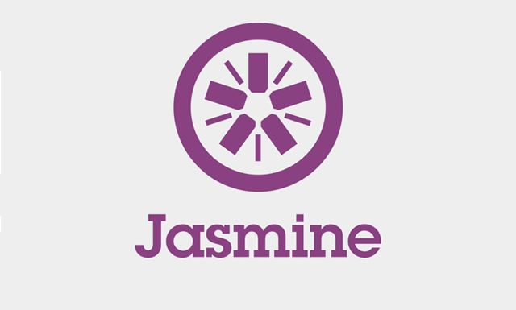
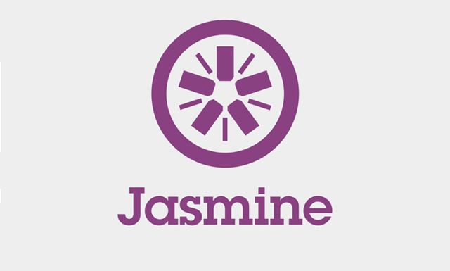
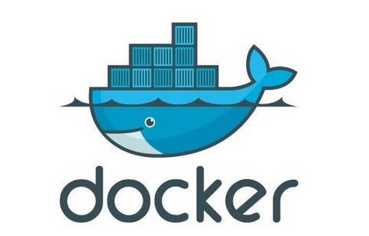
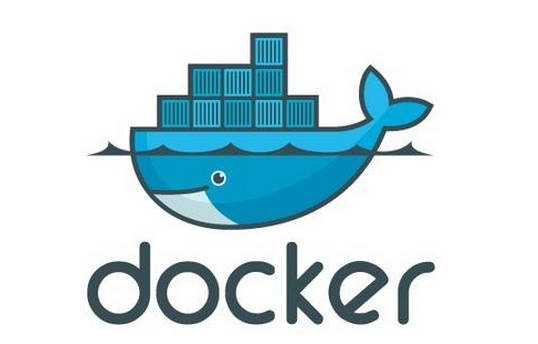

 

初始化
| 工具 | 描述 | 参考 |
|---|---|---|
| Sublime | 编辑器 | http://www.sublimetext.com/ |
| Sublime PM | 插件管理 | https://sublime.wbond.net/ |
| Node+NPM | JS backend | https://sublime.wbond.net/ |
| nvm | node版本管理 | https://github.com/creationix/nvm/ |
| nrm | npm源管理 | https://github.com/Pana/nrm |
| ruby | 语言 | https://www.ruby-lang.org/ |
编写
| 工具 | 描述 | 参考 |
|---|---|---|
| gulp | 构建工具 | http://gulpjs.com/ |
| gulp-watch | 插件管理 | http://gulpjs.com/ |
| Emmet | 简化HTML | https://sublime.wbond.net/ |
| browserify | JS模块管理 | http://browserify.org/ |
| sass | css预处理 | http://sass-lang.com/ |
构建
| 工具 | 描述 | 参考 |
|---|---|---|
| minify | 压缩 | http://gulpjs.com/ |
| sourcemap | 调试利器 |
测试
| 工具 | 描述 | 参考 |
|---|---|---|
| jasmine | 单元测试框架 | http://jasmine.github.io/ |
| testem | 单元测试执行框架 | https://github.com/airportyh/testem |
| phantomjs | 服务器端JavaScript API | http://phantomjs.org/ |
| cucumber | js模块插件 | http://cukes.info/ |
| watir | js模块插件 | http://watir.com/ |
集成/部署
| 工具 | 描述 | 参考 |
|---|---|---|
| vagrant | 虚拟机 | https://sublime.wbond.net/ |
| capistrano | 部署工具 | https://sublime.wbond.net/ |
| docker | 容器 | https://sublime.wbond.net/ |
| jenkins | 持续集成 | http://jenkins-ci.org/ |